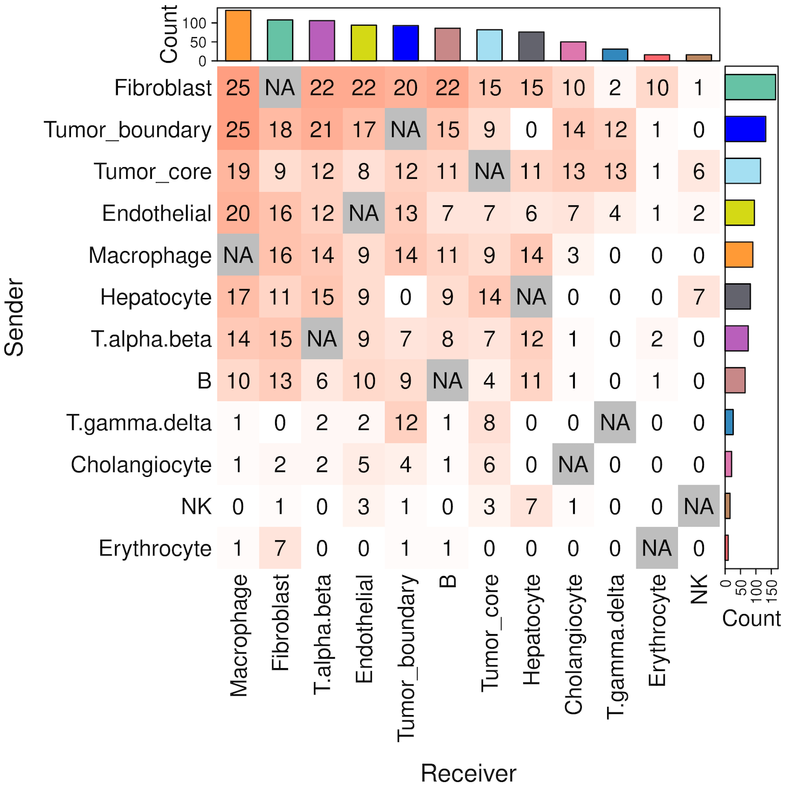

Cell-cell communication for single-cell resolution spatial transcriptomics data
Source:vignettes/stCCC.Rmd
stCCC.RmdThis tutorial demonstrates how to infer cell-cell communication (CCC) mediated by secreted proteins from single-cell resolution spatial transcriptomics (ST) data. For this demonstration, we employ a liver cancer ST sample from CosMx platform [Link]. Before running the tutorial, make sure that you have installed SecAct as well as our previous R package SpaCET. Here, SpaCET will be used to create a SpaCET object to store the ST data.
Read ST data to a SpaCET object
To load data into R, user can create a SpaCET object by preparing three types of input data.
- count data. The spatial transcriptomics count data must be in the format of matrix with gene name (row) x cell ID (column).
- spatial location information. The cell coordinates should be in the format of matrix with cell ID (row) x coordinates (column). The 1st and 2nd columns represent X and Y coordinates, respectively.
- meta data (optional). The meta data should be in the format of matrix with cell ID (row) and meta annotation (column).
library(SecAct)
library(SpaCET)
# download data from https://hpc.nih.gov/~Jiang_Lab/SecAct_Package/LIHC_CosMx_data.rda
# load CosMx data
load("LIHC_CosMx_data.rda")
# show count matrix
dim(counts)
## [1] 1000 460441
# show coordinate matrix
spotCoordinates[1:5,]
## x_slide_mm y_slide_mm
## c_2_100_733 6.70816 9.03340
## c_2_101_240 7.50024 8.86156
## c_2_101_339 7.60560 8.73604
## c_2_101_452 7.62984 9.17260
## c_2_102_179 7.86824 8.99368
# show meta information
metaData[1:5,]
## cellType niche
## c_2_100_733 Tumor_core tumor subtype
## c_2_101_240 Tumor_interface interface
## c_2_101_339 Tumor_core tumor
## c_2_101_452 Tumor_core tumor subtype
## c_2_102_179 Tumor_core tumor
# create a SpaCET object
SpaCET_obj <- create.SpaCET.object(
counts = counts,
spotCoordinates = spotCoordinates,
metaData = metaData,
imagePath = NA,
platform = "CosMx"
)
# show this object.
str(SpaCET_obj)
# filter out cells with less than 50 expressed genes
SpaCET_obj <- SpaCET.quality.control(SpaCET_obj, min.genes=50)
## [1] "Removing cells with less than 50 expressed genes."
## [1] "16926 cells are removed."
## [1] "443515 cells are kept."
# plot the QC metrics
SpaCET.visualize.spatialFeature(
SpaCET_obj,
spatialType = "QualityControl",
spatialFeatures=c("UMI","Gene"),
imageBg = TRUE,
pointSize = 0.1
)
The SpaCET_obj@metaData contains the cell type
annotation from the original study.
# show the spatial distribution of all cell types
my_cols <- c(
'B'='#C88888','Erythrocyte'='#fe666d','T.alpha.beta'='#B95FBB','T.gamma.delta'='#3288bd',
'NK'='#bb8761','Hepatocyte'='#63636d','Cholangiocyte'='#de77ae','Endothelial'='#D4D915',
'Fibroblast'='#66c2a5','Macrophage'='#ff9a36','Tumor_core'='#A4DFF2','Tumor_boundary'='blue',
'Other'='#cccccc'
)
SpaCET.visualize.spatialFeature(
SpaCET_obj,
spatialType = "metaData",
spatialFeatures= "cellType",
colors = my_cols,
pointSize = 0.1
)
Infer secreted protein activity
After loading ST data, user can run
SecAct.activity.inference.ST to infer the signaling
activities of secreted proteins for each spot. The output are stored in
SpaCET_obj @results $SecAct_output $SecretedProteinActivity,
which includes four items, (1) beta: regression coefficients; (2) se:
standard error; (3) zscore: beta/se; (4): pvalue: two-sided test p value
of z score from permutation test.
# infer activity; 60 minutes
SpaCET_obj <- SecAct.activity.inference.ST(
inputProfile = SpaCET_obj,
scale.factor = 1000,
sigFilter=TRUE
)
# The running times mentioned here and onwards were obtained
# from our HPC with 20 cores and 200 GB of memory.
# show activity
SpaCET_obj @results $SecAct_output $SecretedProteinActivity $zscore[1:6,1:3]Infer cell-cell communication
After calculating the secreted protein activity, SecAct could further estimate the consensus pattern from these inferred signaling activities across the whole tissue slide. This module contains two steps.
First, SecAct filters 1248 secreted proteins to identify
the significant secreted proteins mediating intercellular communication
in this slide. To achieve this, SecAct will calculate the
Spearman correlation of secreted protein s signaling activity and its
neighbor cells’ sum expression. The p values were adjusted by the
Benjamini-Hochberg (BH) method as false discovery rate (FDR). The
cutoffs are r > 0.05 and FDR < 0.01.
Second, We designed a computational strategy to statistically test whether a type of secreted protein s mediates the intercellular communication from cell type 1 to cell type 2. Cell-type annotations were retrieved from the original study. First, we identified all neighboring pairs of cells, where one cell was from cell type 1 and the other from cell type 2, based on spatial proximity (distance < 20 μm). Among these neighboring pairs, we identified communicating pairs of cells as those where cell type 1 expressed RNA for s (count > 0), and cell type 2 exhibited signaling activity for s (activity score > 0). We then calculated a communication score for cell type 1 → s → cell type 2, defined as the ratio of communicating pairs to total neighboring pairs. The p-value is Probability (random ratio >= real ratio), computed through 1000 randomizations adjusted by the Benjamini–Hochberg procedure. In each randomization, we randomly permuted the cell IDs within each cell type. A cell type 1 → s → cell type 2 communication is considered significant if ratio > 0.2 and FDR < 0.01.
# infer CCC; 60 minutes
SpaCET_obj <- SecAct.CCC.scST(
SpaCET_obj,
cellType_meta = "cellType",
scale.factor = 1000,
radius = 0.02,
ratio_cutoff = 0.2,
padj_cutoff = 0.01
)
# show output
head(SpaCET_obj @results $SecAct_output $SecretedProteinCCC)Visualize cell-cell communication
We provide two types of visualization plot for cell-cell communication, i.e., heatmap and circle plot. The number in the heatmap represents the count of secreted proteins from senders to receivers.
SecAct.CCC.heatmap(SpaCET_obj, row.sorted=TRUE, column.sorted=TRUE, colors_cellType=my_cols)
SecAct.CCC.circle(SpaCET_obj, colors_cellType=my_cols)
User can select the cell-cell communication of interest from
SpaCET_obj @results $SecAct_output $SecretedProteinCCC to
visualize them using SecAct.CCC.dot. You need to assign
values to sender, secretedProtein, and
receiver.
cellTypes <- c("Tumor_boundary","Fibroblast","Macrophage","Endothelial")
secretedProtein <- c(
"BGN","COL1A1","COL1A2","DCN","IGFBP5",
"LGALS1","LGALS9","LYZ","LUM","MGP",
"SPP1","THBS1","THBS2"
)
SecAct.CCC.dot(
SpaCET_obj,
colors_cellType=my_cols,
sender=cellTypes,
secretedProtein=secretedProtein,
receiver=cellTypes
)Visualize signaling velocity
User can select the cell-cell communication of interest from
SpaCET_obj @results $SecAct_output $SecretedProteinCCC to
visualize them using SecAct.signaling.velocity.scST. You
need to assign values to sender,
secretedProtein, and receiver.
SecAct.signaling.velocity.scST(
SpaCET_obj,
sender="Fibroblast",
secretedProtein="THBS2",
receiver="Tumor_boundary",
cellType_meta="cellType"
)